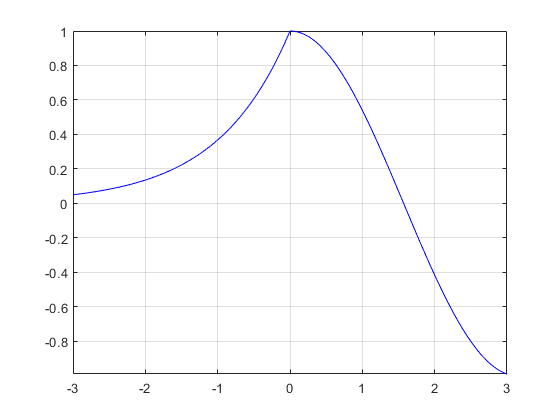
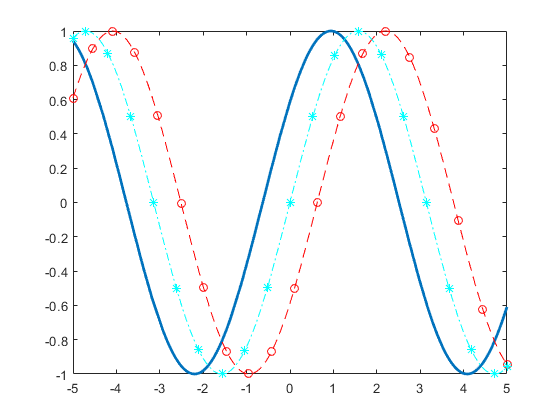
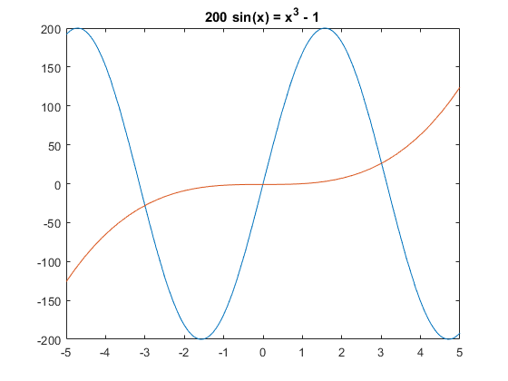
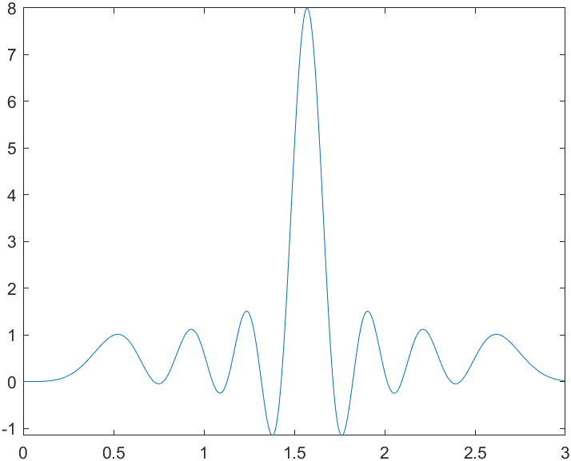
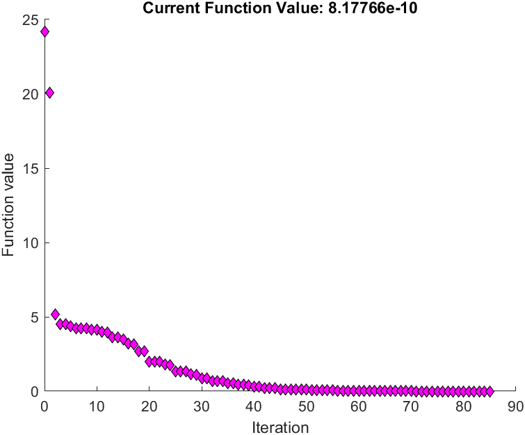

MATLAB 中与函数、方程相关内容
符号变量 syms
在MATLAB中创建或定义一个函数需要用到符号变量。一般情况下，想要绘制函数图像时，往往使用x=[a:0.01:b]的方式先创建一个x的离散定义域，然后再用y=func(x)的方式定义函数本身，最后使用plot(x,y)的方式绘制图像。
然而，当涉及到函数极值、求导、方程求解、连续图像绘制等问题时，这种方法就不够用了。
想要创建一个符号函数，我们首先要创建一个或多个符号变量，用以表示符号函数本身。其定义方式即为syms x x1 x2。其中x,x1,x2 都是符号变量，一个符号函数可以由多个符号变量组成。
符号变量可以有定义域，这里或称限制条件。
限制条件可以在定义时就加上，但往往是较为简单的条件，如positive, real, integer 等。
1 | % Create symbolic variables x and y, and assume that they are integers. |
其次，我们也可以使用更加精确的方法进行限定，即使用assume命令。
1 | syms x |
定义函数
1 | % 方法1 使用这种方法不用特意定义自变量 |
快速绘制函数图像
MATLAB中的函数fplot可以迅速绘制一个符号函数的函数图像，并可以对其显示的x范围进行设定。
1 | fplot(fun) |
默认情况下，其绘制区间为[-5, 5]，但如果符号变量本身有定义域限制，则会优先其定义域，优先级最高的是在绘制函数中指定的绘制区间。
当然，fplot函数还可以绘制多条曲线、分段函数以及参数函数等，详见帮助文档，这里给出几个简单常用例子。
指定绘图区间并绘制分段函数
$e^x\space −3<x<0$
$cos(x)\space 0<x<3$
1 | 使用 hold on 绘制多个线条。使用 fplot 的第二个输入参数指定绘图区间。使用 'b' 将绘制的线条颜色指定为蓝色。在相同坐标区中绘制多个线条时，坐标轴范围会调整以容纳所有数据。 |

当然，使用fplot方法绘制的图像也是可以进行样式自定义的：
1 | fplot(@(x) sin(x+pi/5),'Linewidth',2); |

解方程
MATLAB中有两种常用解方程的函数：solve和vpasolve。前者会返回一个符号解，它的做法就像人类手工推理一样，计算出所有的符号解。而后者则会计算方程的数值解，且只会返回其找到的第一个数值解。
当我们想要使用vpasolve算出某个x范围中的所有解时候，我们有两种方法：
1. 画出方程对应的函数图像，并传给vpasolve一个猜测起点
如给定方程$200*sin(x) = x^3 - 1$, 我们先画出它的图像进行观察：
1 | syms x |

观察后发现，这个方程有三个解，分别在-3, 0, 4的附近，于是我们可以用以下语句找到其所有的三个解
1 | S1 = vpasolve(eqnLeft == eqnRight, x); |
2. 使vpasolve拥有一个随机起点，并进行循环
1 | for n = 1:3 |
3. 仅针对多项式函数
如果你的函数是一个标准的多相似函数，那么你可以使用roots函数一次性得到所有的解。详情请参阅帮助文档。
寻找函数极大极小值
在MATLAB中似乎没有直接一键求出函数的最值的办法，但我们却可以用fminsearch求出某个点附近的极值。
与前面提到的解方程类似，由于该函数并不会直接的把全局最值给你，所以最好先把函数图像画出来，然后观察需要求的极值在那个点附近，然后使用fminsearch函数把相关点的横坐标解出，如果需要最值的值，再把这个横坐标带回去求值。
1 | syms x |

请注意，这里在search的时候我将y改为了-y，因为我要找的是极大值而非极小值。
接着，我们将函数y变为matlabFunction型变量，在根据刚才输出的值求出极值大小：
1 | q=matlabFunction(y) |
于是，我们就找到了函数在该点附近的极值。
你甚至可以看到MATLAB的优化路径：
1 | options = optimset('PlotFcns',@optimplotfval); |

对函数求导
定义好一个符号函数后，直接使用diff命令即可对函数进行符号求导。
1 | syms x |
需要注意的一点是，diff函数不但对符号函数有效，其对数列也是有效的：
1 | X = [1 1 2 3 5 8 13 21]; |